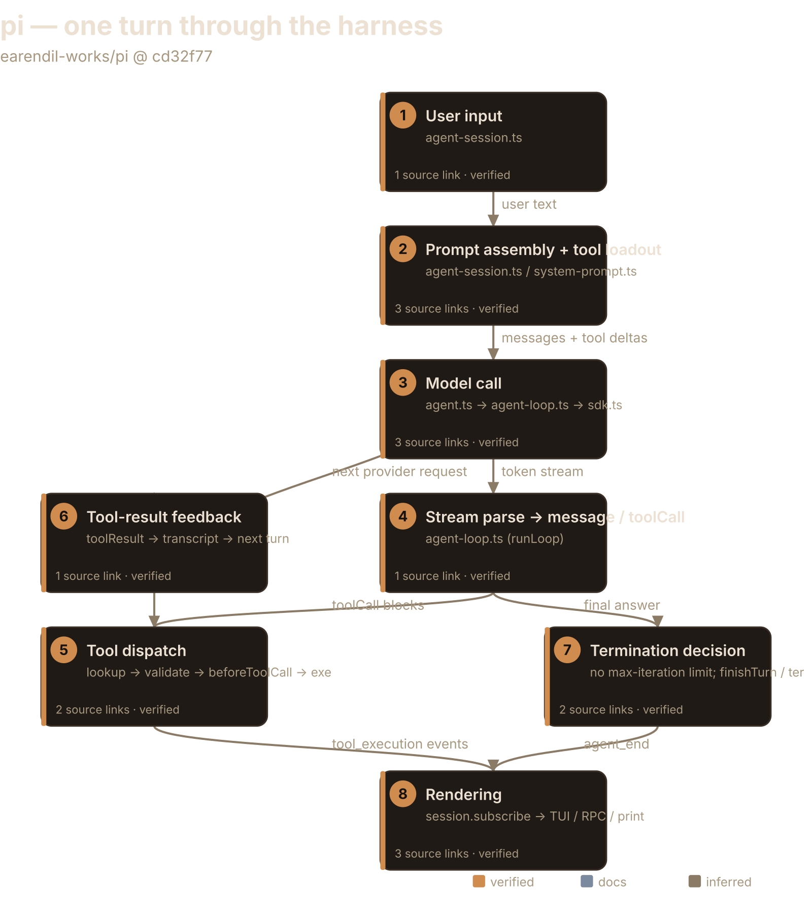
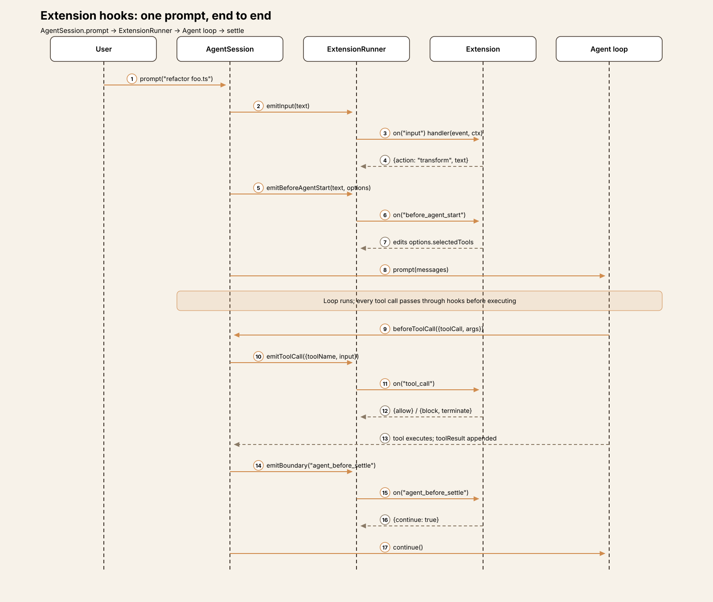
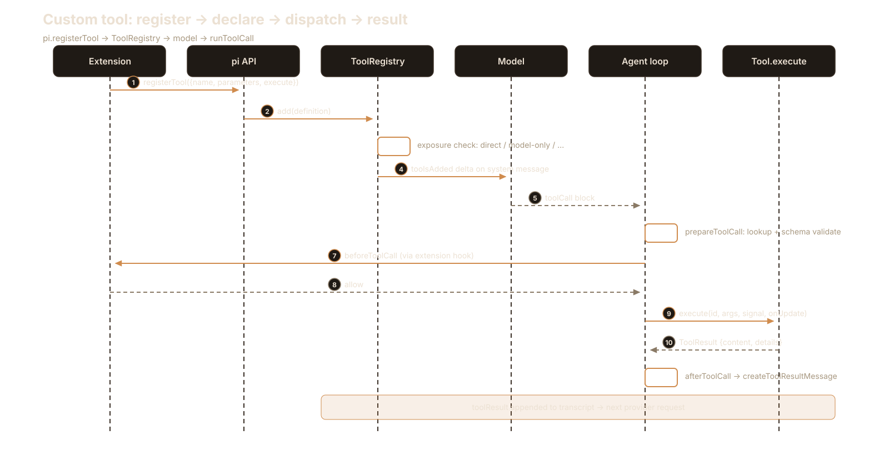
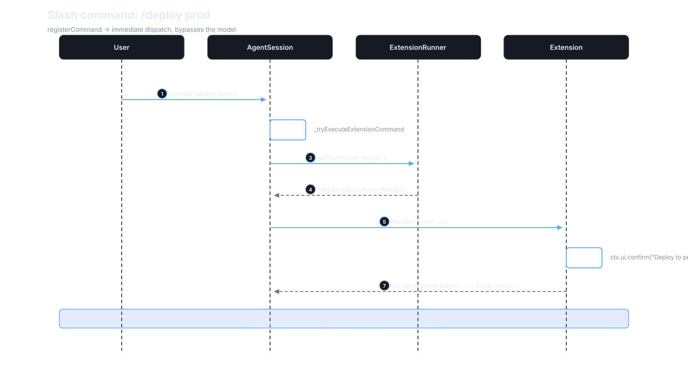
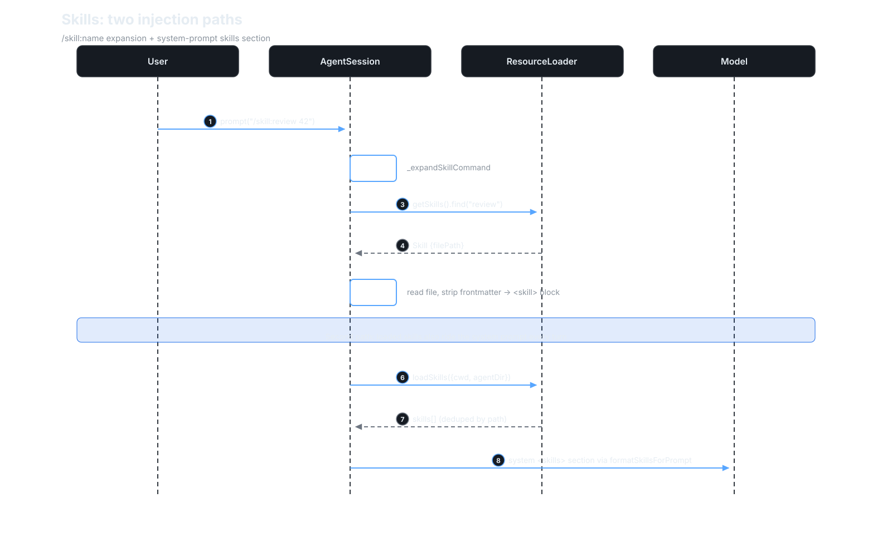
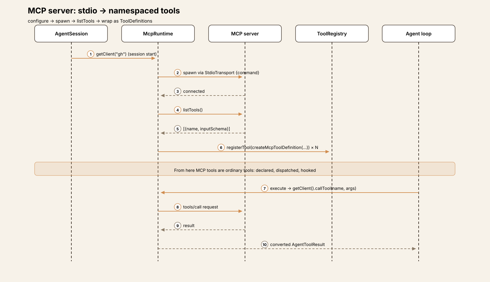
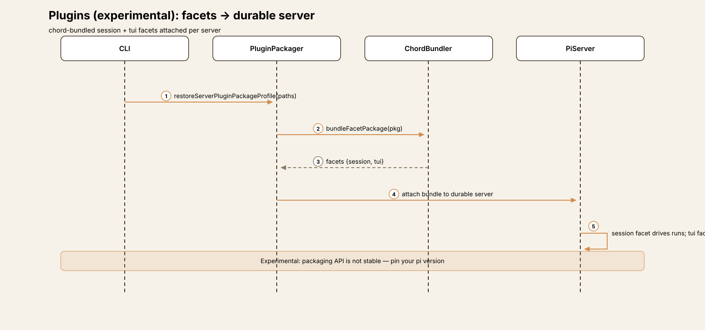
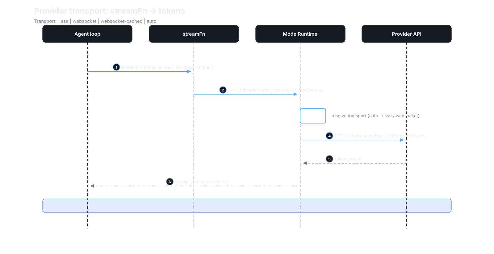
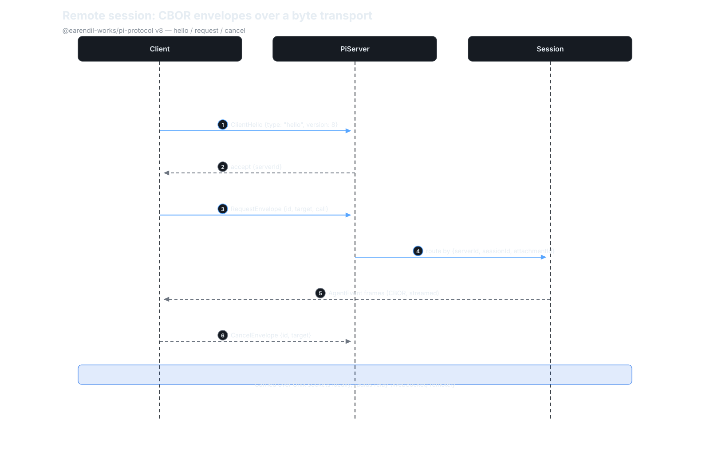

Agent Harness Anatomy #1: pi — the minimalist terminal harness
Series: Agent Harness Anatomy — top-down dissections of real agent harnesses, grounded in verifiable source code. Every behavioral claim below carries a footnote to a pinned GitHub permalink; the full evidence lives in the endnotes.
Version block
- Repo: earendil-works/pi
- Pinned: tag
v1.0.2→cd32f7725fdbddbaecdff5b1e68491563394e0ca(2026-10-04) - Language: TypeScript (Bun/Node)
- Claim under test: "a hardened, minimal, extensible agent harness"

The mental model
pi is two things with a clean seam between them: a model-agnostic agent
loop library (@earendil-works/pi-agent-core) that knows nothing about
terminals, and a terminal coding application that configures one Agent
instance per session and renders its event stream.1 The loop doesn't know
what a tool does — it only knows the protocol: look up, validate,
beforeToolCall, execute, afterToolCall, append the result.2 Everything
pi-specific (system prompt sections, the 4 default tools, the TUI) lives
above that seam.3
The governing tradeoff: pi keeps the core tiny and pushes policy to the edges. Anything opinionated — approvals, planning, memory, iteration caps — is an extension's job or doesn't exist at all. You get a small, stable core with a large extension surface; you pay by assembling your own policy layer. If you're building a harness, that's pi's thesis in one sentence: mechanism in the core, policy in extensions.
Package map
The repo is a monorepo. For this article only three packages matter:4
| Package | Role |
|---|---|
packages/agent |
The loop: Agent class + runAgentLoop/runAgentLoopContinue + event types |
packages/ai |
Model providers (~35) behind one StreamFn signature |
packages/coding-agent |
The app: AgentSession, system prompt, tools, TUI/RPC/print modes |
Everything else (mcp, server, tui, durable, evals, …) is out of
scope for the core trace.
The core loop
runAgentLoop() and runAgentLoopContinue() both delegate to a shared
runLoop().5 Two nested loops:
- Inner loop — runs while tool calls or steering messages remain. Each
iteration: append pending messages →
prepareRequest(may swap context/model/reasoning) →transformContext(extension hooks) →convertToLlm→ provider streaming call → parse response → execute tool calls → append results.6 - Outer loop — after the agent would otherwise stop, drains follow-up messages.6
The loop is event-sourced: every state change emits a typed AgentEvent
(agent_start/end, turn_start/end, message_start/update/end,
tool_execution_start/update/end).7 The Agent class reduces these into
its state and forwards them to subscribers.8 The TUI, the RPC server, and
print mode are all just subscribers — there is no privileged renderer.9
The most interesting negative finding: there is no max-iteration,
max-step, or max-turn limit anywhere in the loop or the session layer.10
A runaway loop is stopped by the model ceasing to emit tool calls, a
tool-result setting terminate: true, a finishTurn hook, or the user
hitting Ctrl+C (AbortController).11 pi trusts the model's stop behavior
the way a REPL trusts EOF.
That's a deliberate trust model, not an oversight — and it's the kind of
decision to steal or reject consciously. Anyone who wants a cap can add one
in a finishTurn hook without forking the loop, so the core never has to
know what "too many iterations" means for your deployment.11 The price is
real: a misbehaving model burns tokens until the user aborts. pi's bet is
that a policy-free core stays small and stable while the ecosystem sorts out
policy — the same bet as the approval story below.
One turn, end to end
Trace: the user types help me refactor foo.ts in interactive mode.
① Input. AgentSession.prompt() validates the model and auth
(OAuth/API key), expands skill commands and prompt templates, and lets
extensions intercept via input handlers.12 If the agent is already
streaming, the message is queued through steer() (interrupt) or
followUp() (wait) instead of starting a new run.13
② Prompt assembly. Before every agent start, extensions may edit the
system-prompt options.14 _preparePromptAndToolLoadout then diffs the
structured system prompt — sections named preamble, tools, rules,
docs, skills, cwd, plus project context — against the transcript's
current sections, and emits only the changed ones (a null removes a
section).1516 Non-preamble sections are wrapped in XML tags of the
same name so the model can match later updates to them.16 Tool
declarations ride along as toolsAdded/toolsRemoved deltas on the system
message, keeping the provider-visible tool list reconciled with the runtime
registry.17
The tradeoff here is token economics versus protocol complexity. Resending
only changed sections keeps long sessions cheap — the model never re-reads
a prompt it already has — but it means the system message is a small
versioned protocol (sections, null removals, tool deltas) that every
provider adapter must replay faithfully.1516 Most harnesses resend the
whole prompt and eat the tokens; pi chose the complex, cheap path.
③ Model call. Agent.prompt() → runAgentLoop() → the app's streamFn,
which delegates to modelRuntime.streamSimple() — token streaming from
whichever of ~35 providers is selected.18 Per-request hooks (onPayload,
onResponse) feed extension observers and a prompt-cache warmer.19
④ Response parsing. Streaming events assemble the partial assistant message in context. Tool calls are extracted from assistant content blocks.20 Edge case worth noting: if the model stops because of output length, tool calls are not executed — each receives an error result, because the arguments may have been truncated.21
⑤ Tool dispatch. Sequential or parallel.22 Per call: tool lookup →
argument preparation → schema validation (TypeBox) → beforeToolCall →
execute → afterToolCall.22 beforeToolCall can block the call and mark
the turn for termination.23 In the coding app this hook is wired to
extension tool_call handlers — there is no built-in per-command approval
prompt.24
Same mechanism/policy split as the iteration cap. The core never blocks on a human, so scripted and headless runs can never hang on a prompt — but every deployment that wants gating must build it as an extension. If your threat model needs approvals, pi gives you the hook, not the feature; budget accordingly.
⑥ Feedback. Each result becomes a toolResult message appended to the
transcript; the inner loop issues the next provider request.25
⑦ Termination. The turn ends when no tool calls, steering, or follow-ups
remain, finishTurn says stop, every result in a batch set terminate, or
an error/abort occurs.11 Post-loop, the session runs auto-retry for
retryable errors, a compaction check, and the agent_before_settle
extension boundary before finally settling.26
⑧ Rendering. The interactive TUI subscribes to the session's event stream and renders tokens, tool executions, and results purely from events. Same stream feeds RPC and print/JSON modes.9
The tradeoff of event-sourcing the UI: any interface can render the same run without the loop knowing it exists — but the event schema becomes the de-facto API contract. Adding a new event type is a versioning decision, not an implementation detail.
Subsystem inventory
- Tools. 4 built-ins:
read,bash,edit,write.27 Schema-validated, with per-tool system-prompt contributions (a one-line snippet + guideline bullets that flow into the prompt'stoolsandrulessections).27 Extensions register more through the same registry; tools can invoke other tools viactx.executeTool()(nested tool calls re-enter the pipeline with the session's hooks).28 - Providers. ~35 files under
packages/ai/src/providers/(Anthropic, OpenAI, Google, Bedrock, OpenRouter, xAI, …). The loop sees exactly one function signature; API keys resolve per request (supports expiring credentials); thinking levels/budgets are forwarded opaquely.29 - Sessions. JSONL files under
~/.pi/agent/sessions/. Compaction lives incore/compaction/with branch summarization; a compaction check runs before and after each prompt.30 - Extensibility. TypeScript extensions with hooks at every seam (see Extension points below).31
Extension points
pi's minimalism is load-bearing: the core stays small because nearly everything plugs in somewhere.
- Extensions (stable API). TypeScript modules with hooks at every seam
of the loop and session —
input,before_agent_start,tool_call,tool_result,context,agent_before_settle— plus slash commands, themes, and prompt templates.31 They run in-process and can veto tool calls throughbeforeToolCall.24 - Custom tools. Extensions and the SDK register tools through the same
registry as the four built-ins; a tool can call other tools via
ctx.executeTool(), re-entering the pipeline with the session's hooks.28 - Skills. Markdown files with frontmatter (
name,description), loaded from the project directory, the global agent dir, or explicit paths — deduplicated by canonical path — and rendered into the system prompt'sskillssection.34 Invoked as/skill:name, expanded before the prompt reaches the loop.12 - MCP servers. Each server tool is wrapped as a pi
ToolDefinition(namespacedserver/tool, parameters converted from its input schema) and enters the same registry and pipeline as built-ins.40 The MCP client itself speaks stdio, streamable HTTP, or in-memory transports.41 - Plugins (experimental). Facet-bundled packages —
sessionandtuifacets — built with the chord bundler and attached per durable server via plugin package profiles.35 - Provider transports. The
StreamFnabstraction streams from model APIs over SSE, WebSocket, or cached WebSocket (Transport = "sse" | "websocket" | "websocket-cached" | "auto").36 - Remote session protocol.
@earendil-works/pi-protocol: a transport-neutral CBOR RPC protocol (version 8) with request/cancel envelopes addressed to server/session/attachment targets.37 The experimental server carries it over Unix domain sockets;38 a radius relay extends it over WebSocket beyond the local machine.39
Extension points in depth
Each axis below is a complete starting kit: what the harness does, the exact interaction sequence, and the first file to open when you implement. Diagrams use the same numbering as the prose steps.
1. Lifecycle hooks
Every prompt passes through the same hook pipeline, in a fixed order:
input handlers can rewrite or swallow the text before anything else
happens; before_agent_start can edit the system-prompt options and tool
selection; then the loop runs, consulting tool_call/tool_result hooks
around every tool execution; finally agent_before_settle gets a last word
— its handlers can force another turn — before agent_end.

Handlers run in-process and receive (event, ctx). Several events support
cancellation (return { cancel: true }) — the session-switch confirmation
in the bundled examples is the canonical pattern.44
Start here: copy examples/extensions/confirm-destructive.ts. An
extension is a default-exported function taking pi: ExtensionAPI, dropped
in ~/.pi/agent/extensions/ or your project's .pi/extensions/.42
Subscribe with pi.on("tool_call", handler); return { block: true } from
a tool_call handler and the call never executes (ToolCallEventResult
also carries an optional reason and a terminate hint).3149
2. Custom tools
Tools are the richest axis. Registration is one call —
pi.registerTool({ name, description, parameters, execute }) — but what
happens next crosses four subsystems: the registry checks the tool's
exposure (direct | model-only | codemode | deferred | hidden),
which decides whether the model sees it, whether it activates on
registration, and who else may call it.45 Active tools are declared to
the model as toolsAdded deltas; when the model emits a toolCall, the
loop looks the tool up, validates arguments against its TypeBox schema,
runs beforeToolCall, executes, runs afterToolCall, and appends the
result.

Start here: ExtensionAPI.registerTool in
core/extensions/types.ts.43 Model the parameters schema on
bash.ts's TypeBox definition and the execute(id, args, signal,
onUpdate) signature on any built-in; set exposure: "model-only" if the
tool should never be directly invokable.
3. Slash commands
Commands bypass the model entirely: text starting with / is intercepted
before prompt expansion, matched against the command registry, and its
handler runs immediately — even mid-stream.12 The handler receives the
raw argument string and a command context with UI primitives
(ctx.ui.confirm/select/notify) and messaging (ctx.sendMessage,
ctx.sendUserMessage, which can trigger a fresh turn).4446

Start here: pi.registerCommand("deploy", { description, handler:
async (args, ctx) => { … } }) — see examples/extensions/commands.ts for
the full shape including argument completions.4243
4. Skills
Skills have two injection paths, and the diagram shows both. Invoked as
/skill:name, the skill's markdown body (frontmatter stripped) is inlined
as a <skill> block ahead of the user's text. Independently, every prompt
carries all loaded skills in the system prompt's skills section, so the
model knows they exist before anyone invokes one.34

Start here: a markdown file with name:/description: frontmatter in
<project>/.pi/skills/ or ~/.pi/agent/skills/.48 Keep the body
task-shaped — skills are procedures, not documentation.
5. MCP servers
MCP is an adapter, not a parallel tool system. Each configured server
(command for stdio, url for streamable HTTP)47 is spawned at session
start; its tools are listed once and each is wrapped by
createMcpToolDefinition into a native pi ToolDefinition — namespaced as
server/tool, parameters converted from the MCP input schema. From there,
an MCP tool is indistinguishable from a built-in: declared, dispatched,
hooked, rendered.

Start here: the server config in settings, then
extensions/mcp/tools.ts if you need custom result conversion.40 The
MCP client itself speaks stdio, streamable HTTP, or in-memory
transports.41
6. Plugins (experimental)
Plugins are the heavyweight axis: whole facets of pi — a session facet
and a tui facet — bundled with the chord bundler and attached to a
durable server via a persisted plugin-package profile.35 Where an
extension customizes behavior inside a running session, a plugin ships a
custom session and interface. The API is explicitly not stable; pin your pi
version.

Start here: experimental/plugins/package.ts — but treat this axis as
incubating, not as a contract.
7. Provider transports
Below the StreamFn abstraction, the model runtime picks a wire transport
per request: SSE, WebSocket, cached WebSocket, or auto.36 Extension
hooks (onPayload, onResponse, provider_stream_event) observe the
traffic at this layer, which is also where the prompt-cache warmer
operates.19

Start here: the transport setting and ModelRuntime.streamSimple.
If you're adding a provider, this is the seam — implement the transport,
the loop never changes.
8. Remote session protocol
@earendil-works/pi-protocol is a transport-neutral CBOR RPC protocol
(version 8): hello, request, and cancel envelopes addressed to
server/session/attachment targets.37 The experimental server carries
those frames over Unix domain sockets;38 the radius relay extends them
over WebSocket past the local machine.39 Because the protocol streams
AgentEvents, a remote client renders exactly what the local TUI renders —
there is still no privileged renderer, just a longer wire.9

Start here: packages/protocol/src/protocol.ts for the envelopes,
framing.ts for the byte framing.
Deliberate omissions
pi ships no sub-agents, no plan mode, and no per-tool approval prompts.32
The first two are documented philosophy ("adapt pi to your workflows"); the
third is architectural: approval is an extension's job, implemented through
beforeToolCall, not a core feature.24 The security model is project trust
(--approve trusts project-local files) plus extension hooks — not
per-command gating.33
Read the omissions as the other half of the thesis: every "missing" feature is a decision to keep the core's surface area small and let the extension layer — or the model itself — carry the weight. Steal the pattern when your harness needs to stay hackable; reject it when your users need guardrails out of the box.
Comparison matrix row
| # | Dimension | pi (v1.0.2) |
|---|---|---|
| 1 | Agent loop | Event-sourced; inner (tool/steer) + outer (follow-up) loops; no iteration cap 5610 |
| 2 | Tool system | 4 built-ins + registry; TypeBox validation; sequential/parallel; nested calls 222728 |
| 3 | Model providers | ~35 behind one StreamFn; per-request key resolution 1829 |
| 4 | Prompt construction | Structured sections, diffed per turn, XML-tagged 1516 |
| 5 | Memory/session | JSONL sessions; compaction with branch summarization 30 |
| 6 | Reasoning/planning | Thinking levels forwarded; no planner/sub-agents (omitted) 2932 |
| 7 | Extensibility | TS extensions, hooks at every seam, MCP, skills 31 |
| 8 | Interfaces | TUI / print / RPC / SDK — all event subscribers 9 |
| 9 | Failure handling | Auto-retry, truncation guards, abort; no iteration cap 212610 |
| 10 | Security model | Project trust + extension hooks; no built-in approval UX 2433 |
Endnotes
All notes are VERIFIED against v1.0.2
(cd32f7725fdbddbaecdff5b1e68491563394e0ca) unless marked DOCS.
GH = https://github.com/earendil-works/pi/blob/cd32f7725fdbddbaecdff5b1e68491563394e0ca/.
Next in the series: Hermes — where the same ten dimensions meet scheduled jobs, persistent memory, and sub-agents.
-
The
Agentclass is constructed once per session inpackages/coding-agent/src/core/sdk.ts(GH…/sdk.ts#L387-L395); the loop package exports only the loop, types, and streaming primitives (GH…/agent/src/index.ts). ↩ -
Tool pipeline stages — lookup, argument preparation, and validation in
prepareToolCall(GH…/agent-loop.ts#L707-L725),beforeToolCallgating (GH…/agent-loop.ts#L727-L746), execution (GH…/agent-loop.ts#L820-L848),afterToolCalland result finalization (GH…/agent-loop.ts#L850-L900). ↩ -
Prompt sections in GH…/system-prompt.ts#L121; built-in tool names in GH…/core/tools/index.ts#L95-L97; TUI event subscription in GH…/interactive-mode.ts#L3354. ↩
-
packages/agent/src/index.tsexportsagent.ts,agent-loop.ts,proxy.ts,stream-fn.ts,types.ts(GH…/agent/src);packages/ai/src/providers/holds ~35 provider files (GH…/ai/src/providers);packages/coding-agent/src/core/holdsagent-session.ts,sdk.ts,system-prompt.ts,tools/,modes/(GH…/coding-agent/src/core). ↩ -
GH…/agent-loop.ts#L102-L128 (
runAgentLoop,runAgentLoopContinue); GH…/agent-loop.ts#L163 (runLoop). ↩↩ -
Inner loop drains steering messages at GH…/agent-loop.ts#L176 and re-polls at L205; per-turn pipeline —
prepareRequest(L219),transformContext(L390-L391),convertToLlm+normalizeContext(L395-L397); outer loop drains follow-ups at L302-L310. ↩↩↩ -
AgentEventunion in GH…/agent/src/types.ts#L516-L540. ↩ -
Agent.processEventsreduces each event into state, then awaits listeners, in GH…/agent/src/agent.ts#L565-L613. ↩ -
Interactive TUI (GH…/interactive-mode.ts#L3354), RPC mode (GH…/rpc-mode.ts#L355), print mode (GH…/print-mode.ts#L108) all subscribe to the same event stream; no renderer calls the loop directly. ↩↩↩↩
-
Negative finding: case-insensitive grep for
maxIterations|maxTurns|maxToolCalls|maxSteps|iterationLimit|turnLimit|loopLimitoverpackages/agent/srcandpackages/coding-agent/srcat the pinned SHA returns zero hits. ↩↩↩ -
Termination paths in GH…/agent-loop.ts#L286-L310 (
finishTurndecision, steering/follow-up exhaustion) and the batch termination rule (L689-L691); abort via the per-runAbortControllerin GH…/agent.ts#L507-L540 (runWithLifecycle; publicabort()at L341). ↩↩↩ -
AgentSession.promptat GH…/agent-session.ts#L1921-L2015: extension commands, input handlers (L1950), skill/template expansion, model and auth validation. ↩↩↩ -
Streaming branch queues via
steer()/followUp()at GH…/agent-session.ts#L1967-L1975; queue primitives in GH…/agent.ts#L299-L308. ↩ -
emitBeforeAgentStartat GH…/agent-session.ts#L2015-L2030. ↩ -
_preparePromptAndToolLoadoutat GH…/agent-session.ts#L1689-L1701; section diffing indiffSystemPromptSectionsat GH…/system-prompt.ts#L204-L218 (nullremoves a section). ↩↩↩ -
Section list and XML wrapping in
buildSystemPromptSectionsat GH…/system-prompt.ts#L121-L160; default tool selection[read, bash, edit, write]innormalizeBuildSystemPromptOptions. ↩↩↩↩ -
declareToolChangesat GH…/agent-loop.ts#L333-L360, applied to initial messages (L110) and each turn's pending messages (L211). ↩ -
Agent.prompt→ GH…/agent.ts#L373-L380 →runAgentLoop(GH…/agent-loop.ts#L102); the app'sstreamFndelegates tomodelRuntime.streamSimpleat GH…/sdk.ts#L387-L406. ↩↩ -
transformProviderPayload/handleProviderResponseat GH…/sdk.ts#L358-L380; prompt-cache warming at L404. ↩↩ -
Tool-call extraction from assistant content blocks at GH…/agent-loop.ts#L259 and L515. ↩
-
Truncated-response handling at GH…/agent-loop.ts#L472-L493 (error result: "the response hit the output token limit, so its arguments may be truncated"), with the rationale at L265. ↩↩
-
toolExecutionmode (default"parallel") in GH…/agent.ts#L240-L260 (constructor); per-call pipeline inrunToolCallat GH…/agent-loop.ts#L810-L870. ↩↩↩ -
beforeToolCallblocking andterminatemarking at GH…/agent-loop.ts#L727-L746. ↩ -
The app's
_beforeToolCallonly forwards to extensiontool_callhandlers, at GH…/agent-session.ts#L625-L648; negative finding: no approval/confirmation prompt exists inpackages/coding-agent/srcorpackages/tui/src(grep fortoolApproval|confirmTool|permissionManagerreturns nothing). ↩↩↩↩ -
createToolResultMessageat GH…/agent-loop.ts#L922-L936; results appended to the transcript at L276, feeding the next inner-loop request. ↩ -
_handlePostAgentRunat GH…/agent-session.ts#L1806-L1844 (auto-retry, compaction check at L1837);agent_before_settleboundary at L1846-L1875. ↩↩ -
Built-in tool names in GH…/core/tools/index.ts#L95-L97; per-tool prompt contributions, e.g. GH…/core/tools/bash.ts (
bashToolSystemPromptContribution), consumed astoolSnippets/toolGuidelinesin GH…/system-prompt.ts. ↩↩↩ -
_executeNestedToolCallat GH…/agent-session.ts#L699-L730 re-entersrunToolCallwith the session's hooks. ↩↩↩ -
Provider files in GH…/ai/src/providers/; per-request API-key resolution at GH…/agent-loop.ts#L401;
thinkingBudgets/transportforwarded opaquely viaAgentOptionsin GH…/agent.ts#L114-L186. ↩↩↩ -
Session directory layout in GH…/session-manager.ts#L587-L601 (
~/.pi/agent/sessions/,.jsonlat L754); compaction in GH…/core/compaction/ with checks before and after each prompt (GH…/agent-session.ts#L2009, L1837). ↩↩ -
Hook event types in GH…/core/extensions/types.ts (e.g.
tool_callat L1153, L1620), dispatched by the extension runner (GH…/runner.ts#L1246). ↩↩↩↩ -
DOCS grade — stated in project documentation/philosophy, not derived from code: pi deliberately omits sub-agents and plan mode. Consistent with the code:
packages/agent/srccontains only the loop, theAgentwrapper, and types — no sub-agent orchestration (GH…/agent/src), and the loop has no planning stage (GH…/agent-loop.ts). The philosophical framing ("adapt pi to your workflows") remains a docs claim. ↩↩ -
--approve/--no-approveflags trust or ignore project-local files, at GH…/cli/args.ts#L232-L234 (help text at L330-L331). ↩↩ -
SkillFrontmatter/Skillin GH…/core/skills.ts#L67-L83;loadSkillsresolves the project dir, global agent dir, explicit paths, and defaults, deduplicating by canonical path, at GH…/core/skills.ts#L394-L440; skills render into the prompt at GH…/core/skills.ts#L355 (formatSkillsForPrompt). ↩↩ -
Experimental plugin packaging: profile version and the default
session/tuifacets at GH…/experimental/plugins/package.ts#L12-L13, bundled via@earendil-works/chord/bundler. Status is experimental — the API is not covered by the stability claims made for extensions. ↩↩ -
Transportin GH…/ai/src/types.ts#L120; selected via settings and forwarded to the stream function (GH…/sdk.ts#L387-L406). ↩↩ -
@earendil-works/pi-protocol— "Transport-neutral CBOR protocol for remote pi sessions" (GH…/protocol/package.json);PROTOCOL_VERSION = 8at GH…/protocol/src/protocol.ts#L5, with request/cancel envelopes and server/session/attachment targets. ↩↩ -
Unix-socket server transport in GH…/experimental/server.ts#L17 (
createUnixServerfrom@earendil-works/pi-server/unix), socket path per server at L153. ↩↩ -
Radius relay over WebSocket (
pi-session-relay.host.v1/pi-session-relay.client.v1subprotocols) in GH…/experimental/radius-relay.ts;TransportAddress = UnixTransportAddress | RadiusTransportAddressat GH…/cli/experimental/command-options.ts#L19. ↩↩ -
createMcpToolDefinitionin GH…/extensions/mcp/tools.ts#L260-L300 wraps an MCP tool as a piToolDefinition(labelserver/tool, parameters frominputSchema,execute→ MCPcallTool). ↩↩ -
@earendil-works/pi-mcp— "Standalone Model Context Protocol client for pi and other applications" (GH…/mcp/package.json); transports in GH…/mcp/src/transports/ (stdio.ts,streamable-http.ts,in-memory.ts). ↩↩ -
Extension shape: a default-exported function taking
pi: ExtensionAPI, installed in~/.pi/agent/extensions/or<project>/.pi/extensions/, per the header of GH…/examples/extensions/commands.ts#L1-L16. ↩↩ -
RegisteredCommand(handler: (args, ctx) => Promise<void>) at GH…/core/extensions/types.ts#L1528-L1534;registerCommandat L1639,registerToolat L1630. ↩↩ -
ctx.ui.confirm/ctx.ui.notify/ctx.ui.selectas used in GH…/examples/extensions/confirm-destructive.ts#L15-L55. ↩↩ -
ToolExposure = "direct" | "model-only" | "codemode" | "deferred" | "hidden"at GH…/core/extensions/types.ts#L509; exposure anddefaultActivesemantics at L593-L606. ↩ -
sendMessage/sendUserMessageonExtensionAPIat GH…/core/extensions/types.ts#L1690-L1710. ↩ -
MCP server configuration (
commandfor stdio,urlfor streamable HTTP) validated at GH…/core/mcp-servers.ts#L265-L277 (schema at L46-L47). ↩ -
Default skill locations in GH…/core/skills.ts#L453-L454 (
<agentDir>/skillsfor user skills,<cwd>/.pi/skillsfor project skills). ↩ -
ToolCallEventResultin GH…/core/extensions/types.ts#L1413 (block,reason,terminate). ↩